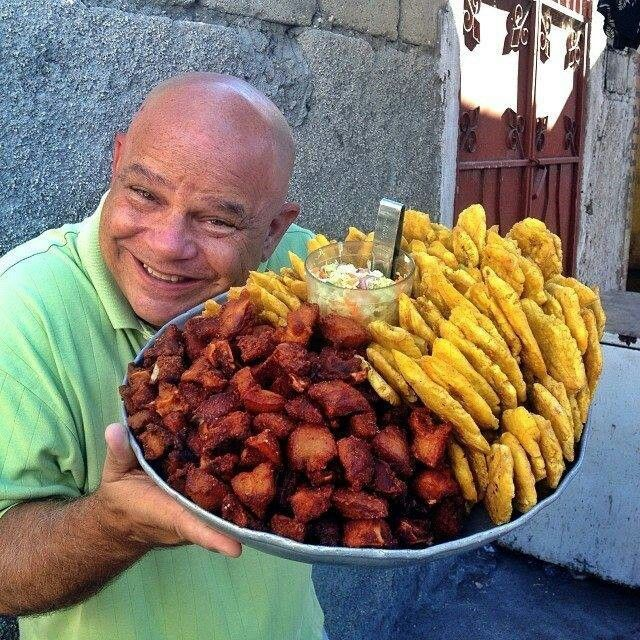

SAVIEZ VOUS QUE L HAITIT EST LA PERLE RARE DES ENTILLE et des caraibes
Le pays a pris son indépendance le premier janvier 1804 Haïti est un pays caribéen situé sur l'île
d'Hispaniola, territoire qu'il partage avec la République dominicaine, à l'est. Bien que le séisme de
2010 ait laissé des traces encore visibles, nombre de points d'intérêt du début du XIXe siècle sont
toujours intacts, par exemple la citadelle La Ferrière, forteresse surplombant l'île, ou encore les
ruines environnantes du palais Sans Sou. La révolution haïtienne constitue la première révolte
d’esclaves réussie du monde moderne. Les historiens situent traditionnellement son départ lors de
la cérémonie vaudoue du Bois-Caïman2, en août 1791. Après treize années de conflit armé qui entrainent
des dizaines de milliers de morts et l'émigration massive de quasiment toute la population blanche de
la colonie, elle établit en 1804 Haïti en tant que premier peuple noir libre du Nouveau Monde,
succédant à la colonie française de Saint-Domingue, mais sans que les conflits armés cessent ensuite.
Haïti est aussi le seul territoire francophone indépendant des Caraïbes, dont il est également le
pays le plus peuplé.

LA CUISINES HAITIENNE
La cuisine haïtienne regroupe l'ensemble des traditions culinaires d'Haïti. Elle est caractérisée par l'influence des différents groupes ethniques historiques qui peuplent la partie ouest de l'île d'Hispaniola, à savoir les Africains et aussi les Américains et les Taïnos, les Français et les Espagnols. Elle est également d'inspiration africaine, du Moyen-Orient mais aussi des États-Unis. La cuisine haïtienne est comparable à la cuisine créole et proche de celles du reste des Caraïbes.
Les Haïtiens consomment largement les légumes, les viandes, le riz ou la farine de maïs. Les poivrons et les herbes sont souvent utilisés pour renforcer la saveur. Les plats ont tendance à être assaisonnés généreusement.
Les entreprises d'origine étrangère qui se sont installées sur l'île y ont aussi introduit leurs propres préparations. Au fil des ans, ces cuisines ont fusionné avec la cuisine haïtienne, comme la cuisine levantine, provenant de la migration arabe à Haïtit
">Parmi les plats de la cuisine haïtienne, voici une liste de plats typiques :
le cassave
chokola La Kaye
doukounou (ht)
diri blan ak sos pwa nwa (riz blanc avec sauce pois noir)
diri ak djon djon (riz djon djon)
diri ak legim (riz aux légumes)
diri ak pwa wouj (riz aux pois rouge)
diri ak sòs pwa (riz aux pois)
macaroni au gratin
pain patate
sòs Ti-Malice (sauce Ti-Malice)
soupe joumou (soupe au giraumon)
le bouillon haïtien (bouyon) : soupe à base de viande de bœuf, pommes de terre, bananes plantains, igname, malanga, cresson, épinards frais ou de chou, céleri. Variante : bouyon dumboys, un bouillon accompagné de dumboys, des petites boulettes de farine.
sòs poul (poulet en sauce)
tomtom : purée à base de fruit à pain (lam veritab), patate douce ou banane verte.
tchaka : soupe populaire (haricots rouges, maïs, viande de porc ou de bœuf, lard, crabes, igname, malanga, joumou)
akasan
LES ARTS ET CULTURES
La culture haïtienne accorde une grande importance aux croyances vaudou. Elles sont issues de la réunion d'éléments dont les origines se retrouvent dans l'ancien royaume du Dahomey en Afrique de l'Ouest. Ces croyances ont été empruntées à plusieurs autres religions mises en commun durant la période de l'esclavage. Souvent assimilé à de la sorcellerie en raison de l'importance représentée par le surnaturel, le vaudou se réfère en réalité à l'ensemble des dieux et des forces invisibles dont les haïtiens cherchent à gagner la protection et la bienveillance. François Duvalier surnommé Papa Doc qui dirigea l'île de 1957 à 1971 l'utilisa comme instrument de pouvoir afin de s'assurer une emprise sur le peuple. Les croyances vaudou s'expriment également à travers de nombreuses formes d'art haïtien comme la peinture, l'artisanat, la musique ou le carnaval: le plus populaire est celui de Jacmel, grande manifestation folklorique très importante aux yeux des haïtiens.
Quelle est la ville la plus belle en Haïti ?
Nous retrouvons en tête de liste parmi les plus belles communes haïtiennes, la ville de Labadie.
Si vous souhaitez séjourner dans une maison à louer pas cher dans la meilleure station balnéaire d'Haïti,
ce village de pêcheurs vous est fortement recommandé